Colorizing the Prokudin-Gorskii Photo Collection
Between 1909 and 1915, Sergei Prokudin-Gorskii photographed the Russian Empire in color — decades before color film existed — by recording three black-and-white exposures of every scene through red, green, and blue filters. Digitized glass plates from that collection arrive as one tall grayscale strip of three stacked exposures; this project automatically finds the alignment that recombines them into a single color photo.
Three exposures, one camera, no color film
Prokudin-Gorskii (1863–1944) built a camera that took the same scene three times through red, green, and blue filters onto a single glass plate, then projected all three back through matching filters to reconstruct color — a trick that worked in a lecture hall but obviously doesn't survive being scanned as a flat image.
The Library of Congress digitized the surviving plates as single grayscale strips: the blue exposure on top, green in the middle, red on the bottom, each occupying roughly the same frame but shifted by a few to a few hundred pixels from the last, since the camera moved slightly between exposures. Recombining them is a search problem: split the strip into thirds, then find the (x, y) shift that best lines up G and R against B. Because the camera didn't rotate or change distance between exposures, a simple translation is enough — no need to search over rotation or scale.
Exhaustive search, then a pyramid to make it fast
Split each scan into equal B, G, R thirds, crop in from the edges so border artifacts don't pollute the score, then search for the displacement that makes each channel match B best.
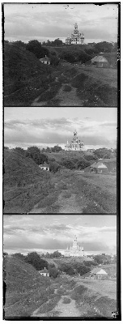
Two scoring metrics decide how well a candidate shift lines up two channels:
- L2 / Euclidean distance —
sqrt(sum((image1 - image2)^2)), minimized at the best alignment. - Normalized Cross-Correlation (NCC) — the dot product of each image mean-subtracted and normalized to unit length, maximized at the best alignment.
Single-scale: brute force
For the small JPEGs, an exhaustive search is cheap: try every displacement in a window of candidate (x, y) shifts, score each one against the reference channel, and keep the best. This is the whole algorithm for Part 1 — no pyramid involved.
Multi-scale: coarse-to-fine pyramid
The full-resolution .tif scans are thousands of pixels
tall with true displacements well beyond what a small search window can
reach, and searching a wide window at full resolution is far too slow.
Instead, the pyramid downsamples both channels by powers of two,
aligns at the coarsest (smallest, cheapest) level first with a wide
search window, then walks back up: at each finer level it doubles the
previous level's shift as a starting guess, applies it, and searches
only a small residual window to refine it. Each level's correction
accumulates into the final total shift. The recursion, downsampling,
and shifting are all implemented directly — only generic
utilities (cv2.resize for downsampling, np.roll
for shifting) are used, no built-in pyramid or auto-alignment routines.
The coarsest level's starting scale is chosen adaptively (never
downsampling past roughly 150px on the short side) so it stays
meaningful on both a ~300px JPEG channel and a ~3000px TIFF channel.
One subtlety that mattered more than expected:
np.roll is circular, so every candidate shift wraps a strip
of garbage in from the opposite edge. Scoring the whole rolled array
against the reference (the naive approach) lets that wraparound noise
pollute every candidate's score, which was enough to send several
images to a visibly wrong optimum. The fix scores only the true overlap
region for each candidate — exactly the rows/columns that
candidate's shift actually wrapped in, no more — matching the
“ignore borders, score on interior pixels” guidance directly.
Bells & whistles: gradient features
L2/NCC on raw pixel intensity is the required baseline, and it's what
produces correct results on almost every image here — but two
plates exposed real limits of comparing raw brightness: emir.tif,
where the channels don't agree on brightness/contrast, and
church.tif, which has four near-identical domes in a row
that raw intensity can barely tell apart. The fix (see
The Hard Cases for the before/after) is to score
on Sobel gradient magnitude instead of raw pixel values — still
L2 distance, just on a feature that reacts to edges and structure
rather than absolute brightness. Channels still get shifted and
composited as raw pixels; only the search uses gradients.
Single-Scale Results
Exhaustive L2 search on the three provided low-resolution JPEGs.
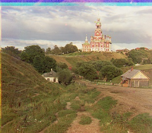


Multi-Scale Pyramid Results
The same three JPEGs plus all 11 full-resolution TIFFs, run through the coarse-to-fine pyramid instead of direct search — a check that the pyramid reproduces Part 1's results on the JPEGs, and the only way the thousands-of-pixels-tall TIFFs finish at all. All 14 images together took 103s (about 7s/image on average), well inside the one-minute-per-image target.

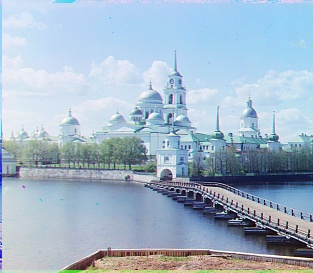
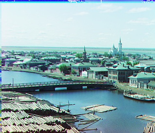

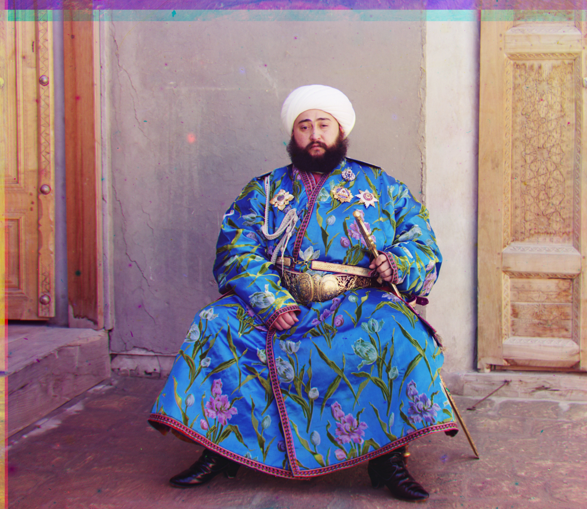
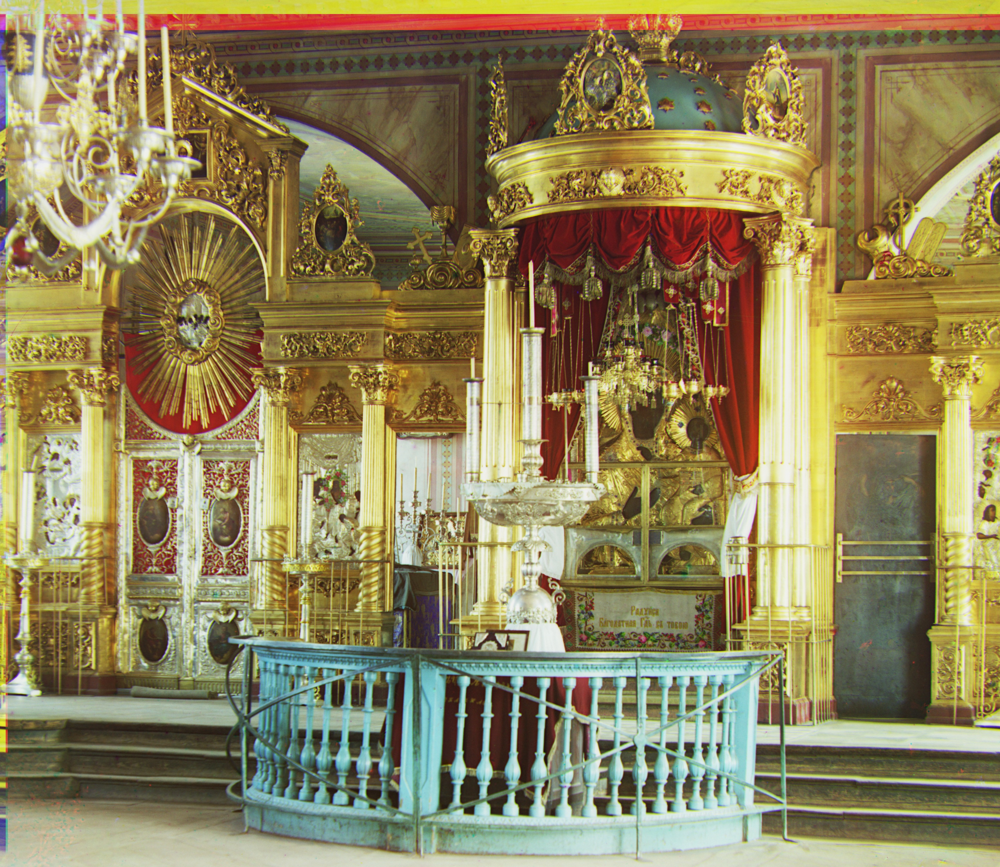
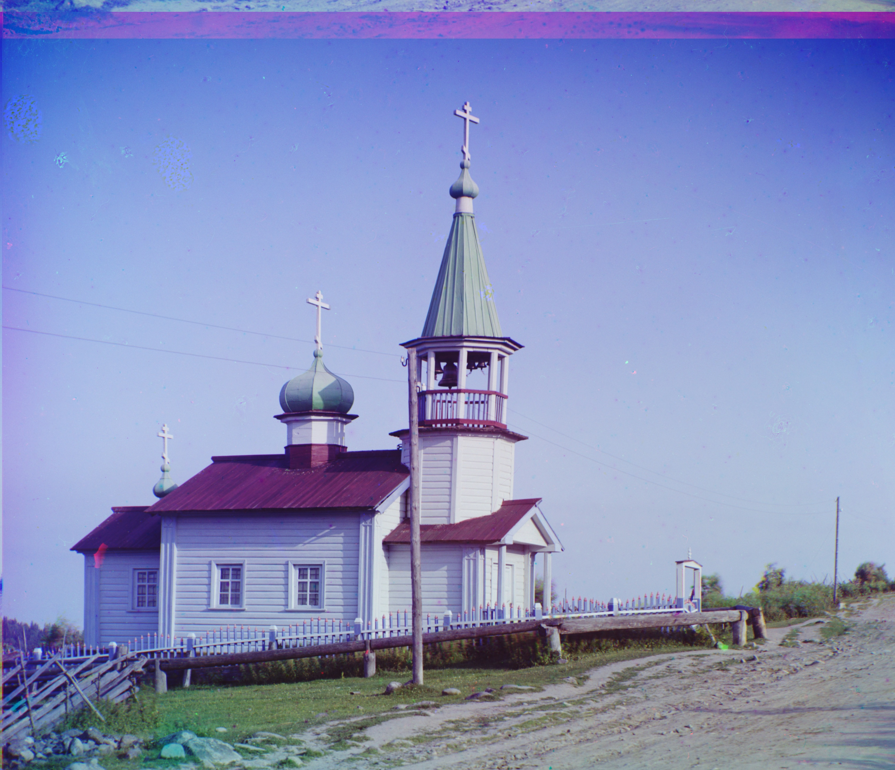
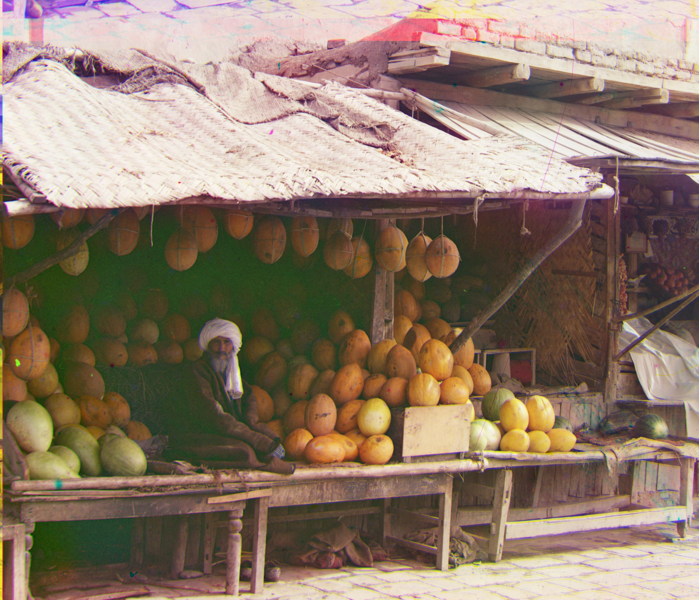

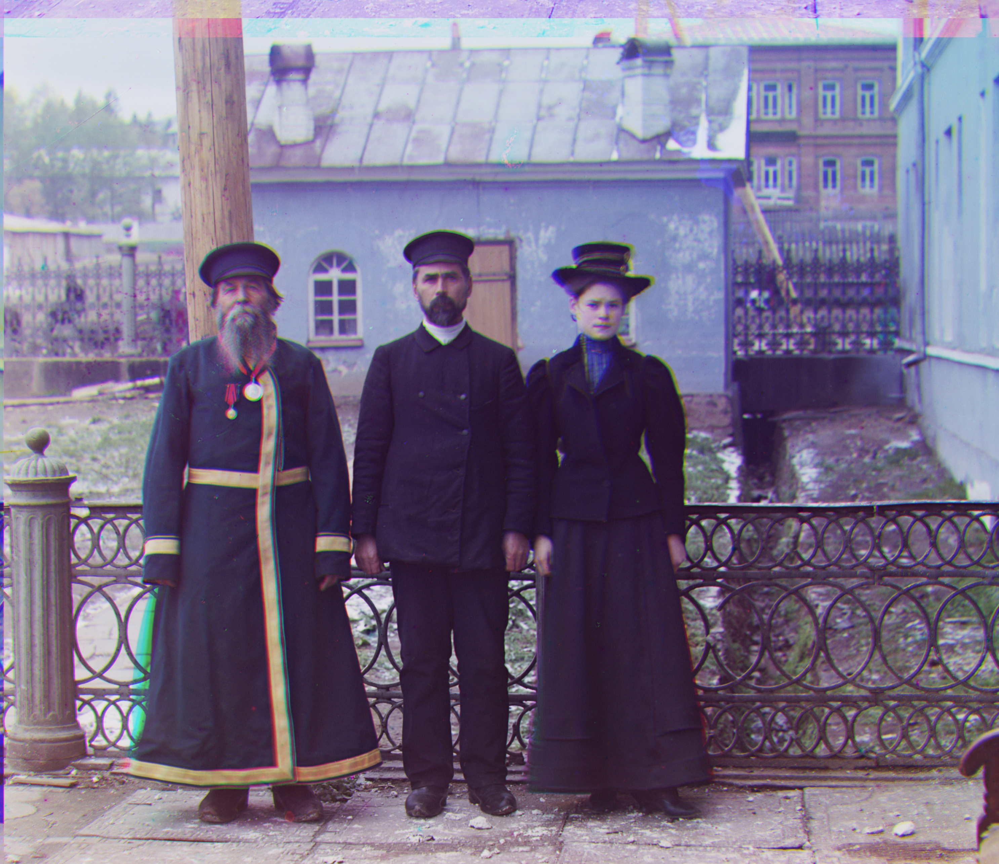
Custom Images
Three more Prokudin-Gorskii plates run through the same multi-scale pipeline, unseen by any tuning done for the provided set.
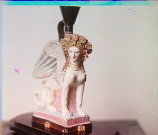
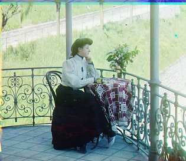
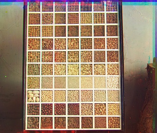
The Hard Cases
Two images stayed stubborn well past everything else: emir.tif,
which the assignment calls out by name, and beans.jpg, a
tight grid of near-identical swatches. Both turned out to share one
cause, and the fix for it briefly broke a third, previously-fine
image before a second fix resolved all three.
The actual bug: scoring included wraparound garbage
np.roll is circular, so every candidate shift wraps a
strip of pixels in from the opposite edge that has nothing to do with
true alignment. The original scoring compared the whole rolled array,
wrapped strip included, which polluted the score badly enough to send
emir.tif and beans.jpg to a visibly wrong
optimum. Excluding exactly the rows/columns each candidate actually
wrapped in (see Method) fixed both outright.
The side effect: church.tif broke
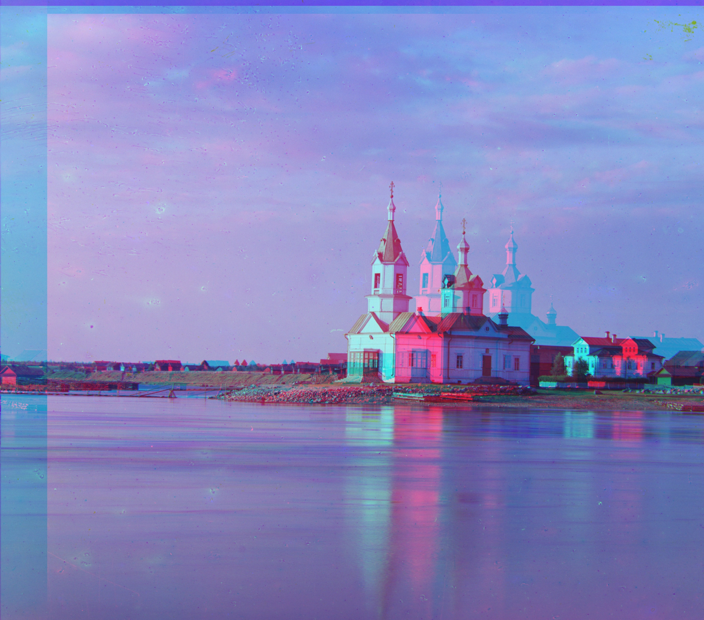
This church has four visually similar onion domes in a row. Once the
wraparound-corrupted region was excluded from scoring, the true
alignment and “shifted by about one dome” scored nearly
identically under raw-intensity L2 — the domes just look too much
alike. The old, buggy whole-array scoring had accidentally been masking
this the entire time: it penalized wraparound content more as shift
magnitude grew, which incidentally discouraged the larger, wrong,
one-dome-over answer. That was never a real defense against periodic
content — just a lucky side effect of the same bug that was
breaking the other two images. Metric-swapping alone couldn't resolve
it cleanly either: NCC fixes church.tif but re-breaks
emir.tif, and raw-intensity L2 is the reverse — the
two images need opposite answers, and the assignment is explicit about
using one fixed set of parameters rather than tuning per image.
The fix: score on gradients, not raw intensity
Scoring on Sobel gradient magnitude instead of raw pixel intensity
— still L2 distance, just computed on a feature that reacts to
edges and structure rather than absolute brightness — fixed
church.tif without re-breaking emir.tif.
Gradients care less about the domes' near-identical brightness and more
about their slightly different silhouettes, and they sidestep
emir.tif's channel brightness mismatch entirely, since
they never look at absolute intensity to begin with. Channels are
still shifted and composited as raw pixels; only the search itself
operates on gradients. Every other image was re-checked against this
change and stayed within a few pixels of its previous shift.